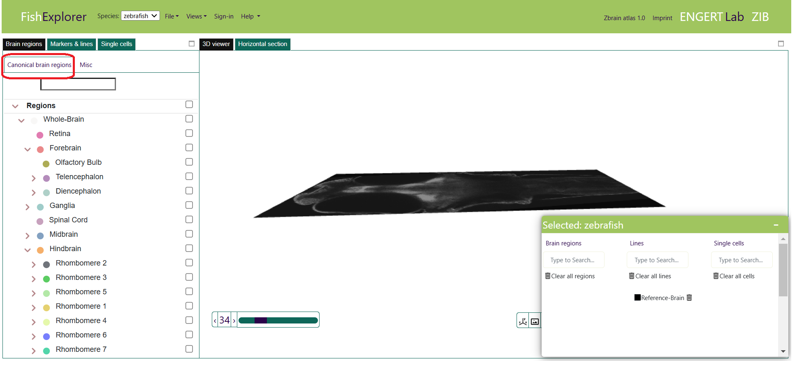
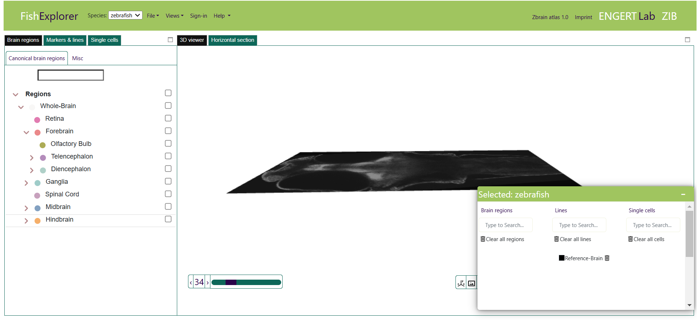
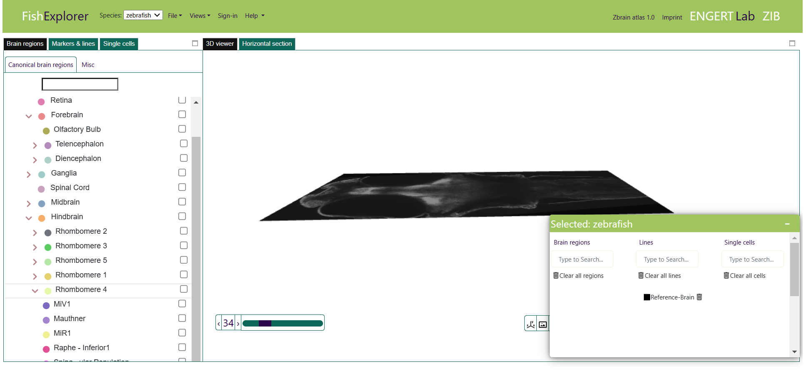
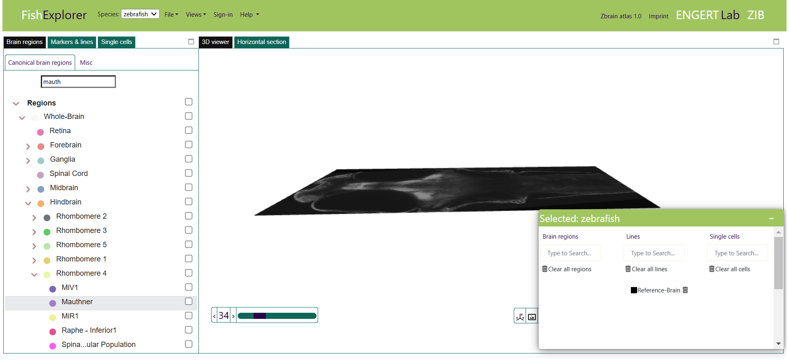
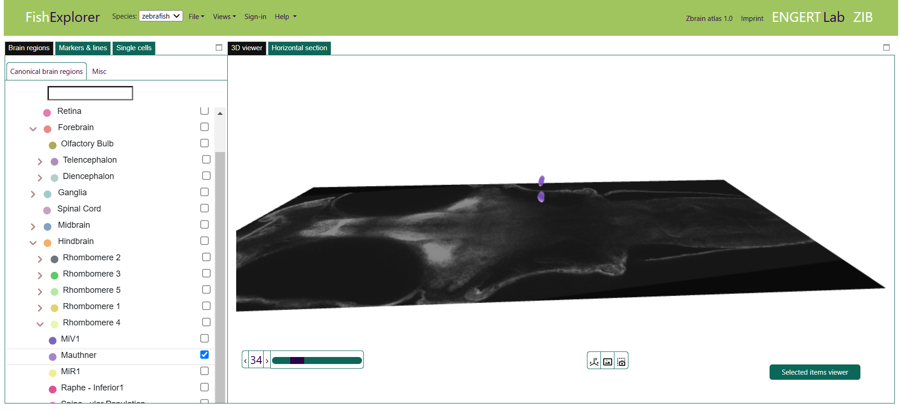

Visualization of the MECE masks
-
This section provides a step-by-step introduction to the visualization of the MECE masks of zebrafish defined by
Owen Randlet. Randlet et al. have created a MECE (Mutually Exclusive and Collectively Exhaustive) segmentation of a 6-days post-fertilization (dpf) zebrafish. This segmentation enables unambiguous
and quantitative anatomical analyses and conforms to standard anatomical nomenclature.
It is often difficult to grasp anatomical knowledge
due to the complex shapes and their complex spatial relationships.
But semantic information such as ontologies support anatomical understanding, so have an ontological viewer that shows
MECE hierarchy and enables flexible and interactive exploration of anatomical structures.
To demonstrate the exploration and search functionality in the MECE hierarchy, here we demonstrate the Mauthner cells as an example.
- First, restart FishExplorer by hitting the refresh button of the browser.
This will start the 3D viewer as the default window, as shown below.

-
In addition, the “Canonical brain regions” tab (highlighted in red in the image above) is selected by default,
resulting in the ontological tree shown in the image below.
Each node in the ontological tree, representing an anatomical region or a group of anatomical regions,
is displayed as an item of the tree. The down-arrow symbol is displayed in front of a region when the
hierarchy below the node is expanded; it is denoted by the right-arrow symbol when there is a hierarchy below that is not expanded.
For example, there is a right arrow symbol in front of hindbrain,
as it is an intermediate node in the ontological tree and its sub-hierarchy is not expanded.
And there is no symbol in front of the spinal cord, as it is a leaf node in the current ontology.

-
Exploration of the ontological tree is possible by clicking on the right- and down-arrows in the front of nodes.
This unfolds or collapses the sub-hierarchy of that node. As we are interestedMauthner cells,
we first click on the right arrow symbol in front of the
hindbrain and then on the right-arrow symbol of rhombomere 4.

-
You can also search the Mauthner cells in the search box, as shown in the image below.
The ontological tree will be automatically unfolded and the nodes matching the search criteria will be highlighted in red.

-
If you wish to load this anatomical region in the horizontal section or the 3D viewer,
click the check box in front of the region name as shown below.
The regions can be removed from the viewer by unchecking the box.
